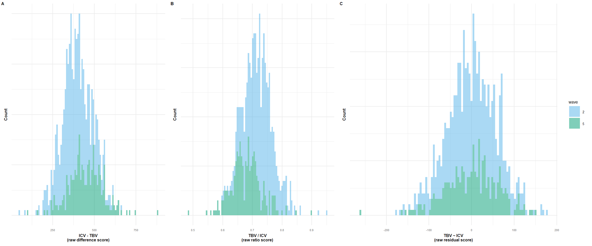
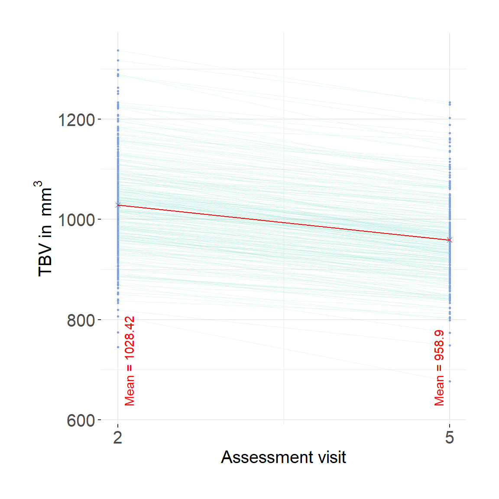
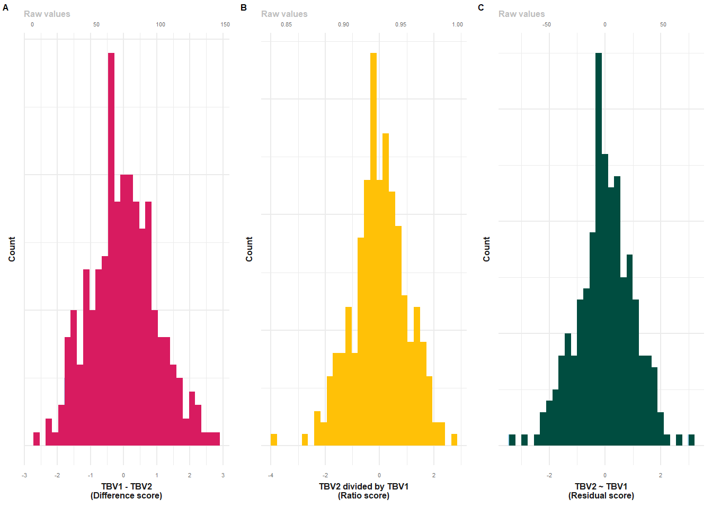

Code
library(cowplot)
library(ggplot2)
library(dplyr)
library(data.table)
library(stringr)
library(dplyr)Code displayed here was used to obtain neuroimaging measures: TBV, ICV, LBA (difference, ratio, residual scores). These measures were obtained for all waves from cross-sectionally processed data, and from longitudinal data considering waves 2 and 5.
The LBC neuroimaging data was processed with FS v5.1, which does not produce BrainSegNotVent estimates that we pre-registered to use across all samples. Instead, we derive TBV as the sum of GMV (cortical and subcortical should also include cerebellum) + cerebellum WMV + cerebral WMV, as was done in a previous paper. One participant was excluded because TBV estimate was larger than ICV estimate - total of 269 participants with two assessments.
library(cowplot)
library(ggplot2)
library(dplyr)
library(data.table)
library(stringr)
library(dplyr)Functions plot_hist and descriptives expect input data set to contain variables called diff, ratio, resid. plot_hist can also handle diff_stand, ratio_stand, resid_stand and will add an extra x-axis if input are standardised variables.
descriptives gives a table of descriptive statistics for TBV, ICV and LBA phenotypes.
plot_hist <- function(dat = dat, var = "diff_stand", split_sample_by = NULL){
# install packages if they don't already exits
packages = c("ggplot2","stringr", "tidyr", "dplyr")
install.packages(setdiff(packages, rownames(installed.packages())))
# load packages
library(ggplot2)
library(stringr)
library(tidyr)
library(dplyr)
# make sure input data is data.frame
dat = as.data.frame(dat)
# rename for simplicity
dat$var = dat[,var]
# calculate summary stats
df_stats <-
dat %>%
summarize(
mean = mean(var, na.rm=T),
median = median(var, na.rm=T)
) %>%
gather(key = Statistic, value = value, mean:median)
# calculate SD cutoffs
insert = c("+2 SDs", as.numeric(df_stats[which(df_stats$Statistic == "mean"), "value"]) + 2*sd(dat$var, na.rm=T))
df_stats <- rbind(df_stats, insert)
insert = c("-2 SDs", as.numeric(df_stats[which(df_stats$Statistic == "mean"), "value"]) - 2*sd(dat$var, na.rm=T))
df_stats <- rbind(df_stats, insert)
# format
df_stats$value <- as.numeric(df_stats$value)
# consider one-sided nature of cut-off
# if difference score, we use the upper 2 SD limit
# if ratio or residual score, we use the lower 2 SD limit
if(var == "diff" | var == "diff_stand"){
df_stats$value[which(df_stats$Statistic == "-2 SDs")]<-NA
# changed my mind, no need for median
df_stats <- df_stats[-which(df_stats$Statistic == "median"),]
# changed my mind, no need for mean either, it's just distracting
df_stats <- df_stats[-which(df_stats$Statistic == "mean"),]
}else if(var == "ratio" | var == "resid" | var == "ratio_stand" | var == "resid_stand"){
df_stats$value[which(df_stats$Statistic == "+2 SDs")]<-NA
# changed my mind, no need for median
df_stats <- df_stats[-which(df_stats$Statistic == "median"),]
# changed my mind, no need for mean either, it's just distracting
df_stats <- df_stats[-which(df_stats$Statistic == "mean"),]
}
# PLOT
# different output when there is a "sample" column
if(is.null(split_sample_by)){
plot = ggplot(dat, aes(x = var))+
geom_histogram(bins = 100, alpha = 0.5, fill = "#56B4E9")+
geom_vline(data = df_stats, aes(xintercept = value, color = Statistic), size = 0.5)+
xlab(var)+
ylab("Count")+
theme_bw()
}else if(!is.null(split_sample_by)){
if(length(which(names(dat) == split_sample_by)) == 0){
message(paste0("You have indicated that you wanted to group plotted values by ", split_sample_by,", but the data contains no such column.")); break
}
# incorporate grouping variable
names(dat)[which(names(dat) == split_sample_by)] = "split_sample_by"
# make sure its a factor
dat$split_sample_by = as.factor(dat$split_sample_by)
colors = c("#56B4E9","#009E73", "#E69F00") # "#79AC78" #grDevices::colors()[grep('gr(a|e)y', grDevices::colors(), invert = T)]
colors = colors[1:length(unique(dat$split_sample_by))]
plot = ggplot(dat)+
geom_histogram(aes(x = var, fill = split_sample_by), bins = 100, alpha = 0.5)+
scale_fill_manual(values = colors, name = split_sample_by)+
geom_vline(data = df_stats, aes(xintercept = value, color = Statistic), size = 0.5)+
xlab(var)+
ylab("Count")+
theme_bw()
}
# make second x-axis if we're working with standardised variables
if(length(grep("_stand", var)) != 0){
# calculate mean from original variable
varOr = str_remove(var, "_stand")
mean = mean(dat[,varOr], na.rm=T)
sd = sd(dat[,varOr], na.rm=T)
# add secondary x axis
plot = plot+
scale_x_continuous(sec.axis = sec_axis(name = "Raw values", trans=~.*sd+mean))
}
plot = plot+theme(panel.border = element_blank())
return(plot)
}
# this onyl works for the correct naming of the variable names to diff, ratio and resid
descriptives = function(samples = c("HCP", "Share", "both")){
# define statistics to include
stats = c("N", "TBV: Mean (SD)", "ICV: Mean (SD)", "cor(ICV,TBV)",
"*Difference score*", "Mean (SD)", "Median", "Range", "Variance", "Cut off",
"*Ratio score*", "Mean (SD)", "Median", "Range", "Variance", "Cut off",
"*Residual score*", "Mean (SD)", "Median", "Range", "Variance", "Cut off")
# object to hold results
res = as.data.frame(matrix(ncol = length(samples)+1, nrow = length(stats)))
names(res) = c("Statistic", samples)
res$Statistic = stats
for(i in samples){
# pull sample
dat = as.data.frame(get(i))
# N
N = sum(!is.na(dat$diff))
res[which(res$Statistic == "N"), which(names(res) == i)] = N
# TBV: Mean (SD)
mean = round(mean(dat$TBV, na.rm = T), digits = 2)
SD = signif(sd(dat$TBV, na.rm = T), digits = 2)
res[which(res$Statistic == "TBV: Mean (SD)"), which(names(res) == i)] = paste0(mean, " (", SD,")")
# ICV: Mean (SD)
mean = round(mean(dat$ICV, na.rm = T), digits = 2)
SD = signif(sd(dat$ICV, na.rm = T), digits = 2)
res[which(res$Statistic == "ICV: Mean (SD)"), which(names(res) == i)] = paste0(mean, " (", SD,")")
# ICV TBV correlation
cor = round(cor.test(dat$ICV, dat$TBV)$estimate, digits = 2)
res[which(res$Statistic == "cor(ICV,TBV)"), which(names(res) == i)] = cor
# Cycle through different scores
for(j in c("Difference", "Ratio", "Resid")){
# determine variable that matches the right score
if(j == "Difference"){
VarName = "diff"
}else if(j == "Ratio"){
VarName = "ratio"
}else if(j == "Resid"){
VarName = "resid"
}
dat$var = dat[,VarName]
### Calculate mean and SD
mean = round(mean(dat$var, na.rm=T), digits = 2)
sd = round(sd(dat$var, na.rm=T), digits = 2)
# find correct position in res to store result
index = grep(j, res$Statistic)
Cand = grep("Mean", res$Statistic)
pos = Cand[which(Cand > index)][1]
# store mean result
res[pos, which(names(res) == i)] = paste0(mean, " (", sd, ")")
### Calculate median
median = round(median(dat$var, na.rm=T), digits = 2)
#store median result
Cand = grep("Median", res$Statistic)
pos = Cand[which(Cand > index)][1]
res[pos, which(names(res) == i)] = median
### Calculate range
min = round(min(dat$var, na.rm = T), digits = 2)
max = round(max(dat$var, na.rm = T), digits = 2)
# store results
Cand = grep("Range", res$Statistic)
pos = Cand[which(Cand > index)][1]
res[pos, which(names(res) == i)] = paste0(min, " to ", max)
## Calculate variance
variance = signif(var(dat$var, na.rm = T), digit = 2)
# store variance result
Cand = grep("Variance", res$Statistic)
pos = Cand[which(Cand > index)][1]
res[pos, which(names(res) == i)] = variance
### calculate cut-off
if(j == "Difference"){
cutOff = mean(dat$var, na.rm = T)+(2*sd(dat$var, na.rm = T))
}else{
cutOff = mean(dat$var, na.rm = T)-(2*sd(dat$var, na.rm = T))
}
# store results
Cand = grep("Cut", res$Statistic)
pos = Cand[which(Cand > index)][1]
res[pos, which(names(res) == i)] = round(cutOff, digit = 1)
}
}
return(res)
}
# define function to make ggplots prettier
make_pretty <- function(){
theme(text = element_text(size=6),
axis.text.x = element_text(size=4, colour='#696969'),
axis.text.y = element_blank(),
plot.title = element_text(face="bold", colour='#1A1A1A', size=6, hjust = 0.5),
axis.title.x = element_text(face="bold", colour='#1A1A1A', size=6),
axis.title.y = element_text(face="bold", colour='#1A1A1A', size=6),
axis.line.x = element_blank(),
axis.line.y = element_blank(),
axis.ticks.x = element_blank(),
axis.ticks.y = element_blank(),
panel.border = element_blank(),
axis.title.x.top = element_text(color = "grey", size=6, hjust=0))
}
# this onyl works for the correct naming of the variable names to diff, ratio and resid
descriptives = function(samples = c("HCP", "Share", "both")){
# define statistics to include
stats = c("N", "TBV: Mean (SD)", "ICV: Mean (SD)", "cor(ICV,TBV)",
"*Difference score*", "Mean (SD)", "Median", "Range", "Variance", "Cut off",
"*Ratio score*", "Mean (SD)", "Median", "Range", "Variance", "Cut off",
"*Residual score*", "Mean (SD)", "Median", "Range", "Variance", "Cut off")
# object to hold results
res = as.data.frame(matrix(ncol = length(samples)+1, nrow = length(stats)))
names(res) = c("Statistic", samples)
res$Statistic = stats
for(i in samples){
# pull sample
dat = as.data.frame(get(i))
# N
N = sum(!is.na(dat$diff))
res[which(res$Statistic == "N"), which(names(res) == i)] = N
# TBV: Mean (SD)
mean = round(mean(dat$TBV, na.rm = T), digits = 2)
SD = signif(sd(dat$TBV, na.rm = T), digits = 2)
res[which(res$Statistic == "TBV: Mean (SD)"), which(names(res) == i)] = paste0(mean, " (", SD,")")
# ICV: Mean (SD)
mean = round(mean(dat$ICV, na.rm = T), digits = 2)
SD = signif(sd(dat$ICV, na.rm = T), digits = 2)
res[which(res$Statistic == "ICV: Mean (SD)"), which(names(res) == i)] = paste0(mean, " (", SD,")")
# ICV TBV correlation
cor = round(cor.test(dat$ICV, dat$TBV)$estimate, digits = 2)
res[which(res$Statistic == "cor(ICV,TBV)"), which(names(res) == i)] = cor
# Cycle through different scores
for(j in c("Difference", "Ratio", "Resid")){
# determine variable that matches the right score
if(j == "Difference"){
VarName = "diff"
}else if(j == "Ratio"){
VarName = "ratio"
}else if(j == "Resid"){
VarName = "resid"
}
dat$var = dat[,VarName]
### Calculate mean and SD
mean = round(mean(dat$var, na.rm=T), digits = 2)
sd = round(sd(dat$var, na.rm=T), digits = 2)
# find correct position in res to store result
index = grep(j, res$Statistic)
Cand = grep("Mean", res$Statistic)
pos = Cand[which(Cand > index)][1]
# store mean result
res[pos, which(names(res) == i)] = paste0(mean, " (", sd, ")")
### Calculate median
median = round(median(dat$var, na.rm=T), digits = 2)
#store median result
Cand = grep("Median", res$Statistic)
pos = Cand[which(Cand > index)][1]
res[pos, which(names(res) == i)] = median
### Calculate range
min = round(min(dat$var, na.rm = T), digits = 2)
max = round(max(dat$var, na.rm = T), digits = 2)
# store results
Cand = grep("Range", res$Statistic)
pos = Cand[which(Cand > index)][1]
res[pos, which(names(res) == i)] = paste0(min, " to ", max)
## Calculate variance
variance = signif(var(dat$var, na.rm = T), digit = 2)
# store variance result
Cand = grep("Variance", res$Statistic)
pos = Cand[which(Cand > index)][1]
res[pos, which(names(res) == i)] = variance
### calculate cut-off
if(j == "Difference"){
cutOff = mean(dat$var, na.rm = T)+(2*sd(dat$var, na.rm = T))
}else{
cutOff = mean(dat$var, na.rm = T)-(2*sd(dat$var, na.rm = T))
}
# store results
Cand = grep("Cut", res$Statistic)
pos = Cand[which(Cand > index)][1]
res[pos, which(names(res) == i)] = round(cutOff, digit = 1)
}
}
return(res)
}Data from the cross-sectional processing stream is used in all cases where samples are compared, as well as in analyses where cross-sectional and longitudinal measures are directly compared.
The naming is kind of confusing and here I am using the naming as the folder are called. There are wave 1, wave 2, wave 3 and wave 4 (which technically are waves 2,3,4,5 and scans 1,2,3,4), but that’s what they were called during processing.
#!/bin/bash
# Extract FreeSurfer variables (volume, area, thickness) for our LBC1936 W2 (scan 1) cross-sectional subjects
# Colin Buchanan, 2022
# Colin's script was adapted to extract cross-sectional estimates from LBC at wave 5
# first, create subjects list of participants with wave 5 data
#R
#setwd("/Brain_Imaging/LBC1936_FS_long/LBC_long_W4")
# note that all subjects in this directory without a wave are the templates and the ones with a wave but without 'long' should be the longitudinally processed waves
# list dirs
#dirs = dir()
# keep only W4 because it's visit 5
#dirs = dirs[grepl("W4", dirs)]
# remove long scans
#dirs = dirs[!grepl(".long.", dirs)]
#write.table(dirs, "/CCACE_Shared/Anna_F/BrainAtrophy/scripts/LBClong/subjects_wave3.csv", col.names=F, row.names=F, quote=F, sep="\t")
## use this ID list to extract measurements from FS dirs
FREESURFER_HOME=/Cluster_Filespace/mharris4/LBC_long_W4/freesurfer510
$FREESURFER_HOME/SetUpFreeSurfer.sh
out="/CCACE_Shared/Anna_F/BrainAtrophy/data"
ref1="/CCACE_Shared/Anna_F/BrainAtrophy/scripts/LBClong/subjects_wave1.csv"
ref2="/CCACE_Shared/Anna_F/BrainAtrophy/scripts/LBClong/subjects_wave2.csv"
ref3="/CCACE_Shared/Anna_F/BrainAtrophy/scripts/LBClong/subjects_wave3.csv"
ref4="/CCACE_Shared/Anna_F/BrainAtrophy/scripts/LBClong/subjects_wave4.csv"
SUBJECTS_DIR=/Brain_Imaging/LBC1936_FS_long/LBC_long_W4
# Wave1
asegstats2table --subjectsfile $ref1 --meas volume --common-segs --delimiter comma --tablefile "${out}/LBC1936_global_w1_cross.csv"
# Wave2
asegstats2table --subjectsfile $ref2 --meas volume --common-segs --delimiter comma --tablefile "${out}/LBC1936_global_w2_cross.csv"
# Wave3
asegstats2table --subjectsfile $ref3 --meas volume --common-segs --delimiter comma --tablefile "${out}/LBC1936_global_w3_cross.csv"
# Wave4
asegstats2table --subjectsfile $ref4 --meas volume --common-segs --delimiter comma --tablefile "${out}/LBC1936_global_w4_cross.csv"# read in cross-stats
## wave 1
crossDir="/Brain_Imaging/LBC1936_FS_long/freesurfer_crosssect_stats"
cross = fread(paste0(crossDir, "/global_w2.csv"), data.table=F)
# the naming here is super confusing because it switches from wave 1 to scan 1 ...
# but the actual participant names definitively say which wave this scan is from and it's (wave 1 naming, which corresponds to the second wave but first scan - so confusing)
# I will name it below to reflect the folder names (i.e., wave 1 in this case)
names(cross) = gsub("-", ".", names(cross), fixed = T)
# format each of those variables to long format
## TotalGrayVol
## Right.Cerebellum.White.Matter
## Left.Cerebellum.White.Matter
crossLBC = cross[ , c(1, grep("TotalGrayVol|Right.Cerebellum.White.Matter|Left.Cerebellum.White.Matter|CorticalWhiteMatterVol|CSF|IntraCranialVol", names(cross))) ]
# remove lh & rhCorticalWhiteMatterVol (because whole measure is also included)
crossLBC = crossLBC[, !grepl("rh|lh", names(crossLBC))]
# calculate sum of the regions
crossLBC$TBV = rowSums(crossLBC[,c("TotalGrayVol", "Right.Cerebellum.White.Matter", "Left.Cerebellum.White.Matter", "CorticalWhiteMatterVol")], na.rm = F)
# rename for easier names
names(crossLBC)[grep("Measure:volume", names(crossLBC))] = "lbc36no"
names(crossLBC)[grep("IntraCranialVol", names(crossLBC))] = "ICV"
crossLBC = crossLBC[,c("lbc36no", "ICV", "TBV", "CSF")]
# two participants have a smaller ICV than TBV sum(crossLBC$ICV - crossLBC$TBV < 0)
# must be an error (LBC360213 & LBC361303)
crossLBC = crossLBC[-which(crossLBC$ICV - crossLBC$TBV <0),]
### calculate atrophy measures
# convert mm3 estimates to more intuitive cm3 estimates
crossLBC$ICV = crossLBC$ICV/1000
crossLBC$TBV = crossLBC$TBV/1000
# estimate brain atrophy from single MRI scan
crossLBC$diff = crossLBC$ICV - crossLBC$TBV
crossLBC$ratio = crossLBC$TBV / crossLBC$ICV
##### derive the residuals for each time point separately
model <- lm(TBV ~ ICV, data = crossLBC)
crossLBC$resid = resid(model)
# standardise variables within one time-point
crossLBC$resid_stand = as.vector(scale(crossLBC$resid))
crossLBC$diff_stand = as.vector(scale(crossLBC$diff))
crossLBC$ratio_stand = as.vector(scale(crossLBC$ratio))
crossLBC$TBVstand = as.vector(scale(crossLBC$TBV))
crossLBC$ICVstand = as.vector(scale(crossLBC$ICV))
crossLBC$CSFstand = as.vector(scale(crossLBC$CSF))
# rename participant labels to match global naming
crossLBC$lbc36no = stringr::str_remove(crossLBC$lbc36no, pattern = "_W1")
# store as txt file
fwrite(crossLBC[,c("lbc36no", "ICV", "TBV", "CSF", "diff", "ratio", "resid", "ICVstand", "TBVstand", "CSFstand", "resid_stand", "diff_stand", "ratio_stand")], paste0(wd, "/LBC1936_crossNeuroWave1.txt"), quote = F, col.names = T, sep = "\t")# read in cross-stats
## wave 2
crossDir="/CCACE_Shared/Anna_F/BrainAtrophy/data"
cross = fread(paste0(crossDir, "/LBC1936_global_w2_cross.csv"), data.table=F)
names(cross) = gsub("-", ".", names(cross), fixed = T)
# format each of those variables to long format
## TotalGrayVol
## Right.Cerebellum.White.Matter
## Left.Cerebellum.White.Matter
crossLBC = cross[ , c(1, grep("TotalGrayVol|Right.Cerebellum.White.Matter|Left.Cerebellum.White.Matter|CorticalWhiteMatterVol|CSF|IntraCranialVol", names(cross))) ]
# remove lh & rhCorticalWhiteMatterVol (because whole measure is also included)
crossLBC = crossLBC[, !grepl("rh|lh", names(crossLBC))]
# calculate sum of the regions
crossLBC$TBV = rowSums(crossLBC[,c("TotalGrayVol", "Right.Cerebellum.White.Matter", "Left.Cerebellum.White.Matter", "CorticalWhiteMatterVol")], na.rm = F)
# rename for easier names
names(crossLBC)[grep("Measure:volume", names(crossLBC))] = "lbc36no"
names(crossLBC)[grep("IntraCranialVol", names(crossLBC))] = "ICV"
crossLBC = crossLBC[,c("lbc36no", "ICV", "TBV", "CSF")]
# two participants have a smaller ICV than TBV sum(crossLBC$ICV - crossLBC$TBV < 0)
# must be an error (LBC360213 & LBC361303)
crossLBC = crossLBC[-which(crossLBC$ICV - crossLBC$TBV <0),]
### calculate atrophy measures
# convert mm3 estimates to more intuitive cm3 estimates
crossLBC$ICV = crossLBC$ICV/1000
crossLBC$TBV = crossLBC$TBV/1000
# estimate brain atrophy from single MRI scan
crossLBC$diff = crossLBC$ICV - crossLBC$TBV
crossLBC$ratio = crossLBC$TBV / crossLBC$ICV
##### derive the residuals for each time point separately
model <- lm(TBV ~ ICV, data = crossLBC)
crossLBC$resid = resid(model)
# standardise variables within one time-point
crossLBC$resid_stand = as.vector(scale(crossLBC$resid))
crossLBC$diff_stand = as.vector(scale(crossLBC$diff))
crossLBC$ratio_stand = as.vector(scale(crossLBC$ratio))
crossLBC$TBVstand = as.vector(scale(crossLBC$TBV))
crossLBC$ICVstand = as.vector(scale(crossLBC$ICV))
crossLBC$CSFstand = as.vector(scale(crossLBC$CSF))
# rename participant labels to match global naming
crossLBC$lbc36no = stringr::str_remove(crossLBC$lbc36no, pattern = "_W2")
# store as txt file
fwrite(crossLBC[,c("lbc36no", "ICV", "TBV", "CSF", "diff", "ratio", "resid", "ICVstand", "TBVstand", "CSFstand", "resid_stand", "diff_stand", "ratio_stand")], paste0(wd, "/LBC1936_crossNeuroWave2.txt"), quote = F, col.names = T, sep = "\t")# read in cross-stats
## wave 3
crossDir="/CCACE_Shared/Anna_F/BrainAtrophy/data"
cross = fread(paste0(crossDir, "/LBC1936_global_w3_cross.csv"), data.table=F)
names(cross) = gsub("-", ".", names(cross), fixed = T)
# format each of those variables to long format
## TotalGrayVol
## Right.Cerebellum.White.Matter
## Left.Cerebellum.White.Matter
crossLBC = cross[ , c(1, grep("TotalGrayVol|Right.Cerebellum.White.Matter|Left.Cerebellum.White.Matter|CorticalWhiteMatterVol|CSF|IntraCranialVol", names(cross))) ]
# remove lh & rhCorticalWhiteMatterVol (because whole measure is also included)
crossLBC = crossLBC[, !grepl("rh|lh", names(crossLBC))]
# calculate sum of the regions
crossLBC$TBV = rowSums(crossLBC[,c("TotalGrayVol", "Right.Cerebellum.White.Matter", "Left.Cerebellum.White.Matter", "CorticalWhiteMatterVol")], na.rm = F)
# rename for easier names
names(crossLBC)[grep("Measure:volume", names(crossLBC))] = "lbc36no"
names(crossLBC)[grep("IntraCranialVol", names(crossLBC))] = "ICV"
crossLBC = crossLBC[,c("lbc36no", "ICV", "TBV", "CSF")]
# no participants have smaller ICV than TBV
#crossLBC = crossLBC[-which(crossLBC$ICV - crossLBC$TBV <0),]
### calculate atrophy measures
# convert mm3 estimates to more intuitive cm3 estimates
crossLBC$ICV = crossLBC$ICV/1000
crossLBC$TBV = crossLBC$TBV/1000
# estimate brain atrophy from single MRI scan
crossLBC$diff = crossLBC$ICV - crossLBC$TBV
crossLBC$ratio = crossLBC$TBV / crossLBC$ICV
##### derive the residuals for each time point separately
model <- lm(TBV ~ ICV, data = crossLBC)
crossLBC$resid = resid(model)
# standardise variables within one time-point
crossLBC$resid_stand = as.vector(scale(crossLBC$resid))
crossLBC$diff_stand = as.vector(scale(crossLBC$diff))
crossLBC$ratio_stand = as.vector(scale(crossLBC$ratio))
crossLBC$TBVstand = as.vector(scale(crossLBC$TBV))
crossLBC$ICVstand = as.vector(scale(crossLBC$ICV))
crossLBC$CSFstand = as.vector(scale(crossLBC$CSF))
# rename participant labels to match global naming
crossLBC$lbc36no = stringr::str_remove(crossLBC$lbc36no, pattern = "_W3")
# store as txt file
fwrite(crossLBC[,c("lbc36no", "ICV", "TBV", "CSF", "diff", "ratio", "resid", "ICVstand", "TBVstand", "CSFstand", "resid_stand", "diff_stand", "ratio_stand")], paste0(wd, "/LBC1936_crossNeuroWave3.txt"), quote = F, col.names = T, sep = "\t")# read in cross-stats
## wave 4
crossDir="/CCACE_Shared/Anna_F/BrainAtrophy/data"
cross = fread(paste0(crossDir, "/LBC1936_global_w4_cross.csv"), data.table=F)
names(cross) = gsub("-", ".", names(cross), fixed = T)
# format each of those variables to long format
## TotalGrayVol
## Right.Cerebellum.White.Matter
## Left.Cerebellum.White.Matter
crossLBC = cross[ , c(1, grep("TotalGrayVol|Right.Cerebellum.White.Matter|Left.Cerebellum.White.Matter|CorticalWhiteMatterVol|CSF|IntraCranialVol", names(cross))) ]
# remove lh & rhCorticalWhiteMatterVol (because whole measure is also included)
crossLBC = crossLBC[, !grepl("rh|lh", names(crossLBC))]
# calculate sum of the regions
crossLBC$TBV = rowSums(crossLBC[,c("TotalGrayVol", "Right.Cerebellum.White.Matter", "Left.Cerebellum.White.Matter", "CorticalWhiteMatterVol")], na.rm = F)
# rename for easier names
names(crossLBC)[grep("Measure:volume", names(crossLBC))] = "lbc36no"
names(crossLBC)[grep("IntraCranialVol", names(crossLBC))] = "ICV"
crossLBC = crossLBC[,c("lbc36no", "ICV", "TBV", "CSF")]
# no participants have smaller ICV than TBV
#crossLBC = crossLBC[-which(crossLBC$ICV - crossLBC$TBV <0),]
### calculate atrophy measures
# convert mm3 estimates to more intuitive cm3 estimates
crossLBC$ICV = crossLBC$ICV/1000
crossLBC$TBV = crossLBC$TBV/1000
# estimate brain atrophy from single MRI scan
crossLBC$diff = crossLBC$ICV - crossLBC$TBV
crossLBC$ratio = crossLBC$TBV / crossLBC$ICV
##### derive the residuals for each time point separately
model <- lm(TBV ~ ICV, data = crossLBC)
crossLBC$resid = resid(model)
# standardise variables within one time-point
crossLBC$resid_stand = as.vector(scale(crossLBC$resid))
crossLBC$diff_stand = as.vector(scale(crossLBC$diff))
crossLBC$ratio_stand = as.vector(scale(crossLBC$ratio))
crossLBC$TBVstand = as.vector(scale(crossLBC$TBV))
crossLBC$ICVstand = as.vector(scale(crossLBC$ICV))
crossLBC$CSFstand = as.vector(scale(crossLBC$CSF))
# rename participant labels to match global naming
crossLBC$lbc36no = stringr::str_remove(crossLBC$lbc36no, pattern = "_W4")
# store as txt file
fwrite(crossLBC[,c("lbc36no", "ICV", "TBV", "CSF", "diff", "ratio", "resid", "ICVstand", "TBVstand", "CSFstand", "resid_stand", "diff_stand", "ratio_stand")], paste0(wd, "/LBC1936_crossNeuroWave4.txt"), quote = F, col.names = T, sep = "\t")# read in LBC neuroimaging data
LBC2 = fread(paste0(out, "/LBC1936_crossNeuroWave1.txt"))
LBC2$wave = 2
LBC5 = fread(paste0(out, "/LBC1936_crossNeuroWave4.txt"))
LBC5$wave = 5
LBC = rbind(LBC2, LBC5)
p1 = plot_hist(dat = LBC, var = "diff", split_sample_by = "wave")+
xlab("ICV - TBV\n(raw difference score)")+
theme(legend.position="none")+
make_pretty()
# delete SD stats
p1$layers[[2]]=NULL
p2 = plot_hist(dat = LBC, var = "ratio", split_sample_by = "wave")+
xlab("TBV / ICV\n(raw ratio score)")+
theme(legend.position="none")+
make_pretty()
# delete SD stats
p2$layers[[2]]=NULL
p3 = plot_hist(dat = LBC, var = "resid", split_sample_by = "wave")+
xlab("TBV ~ ICV\n(raw residual score)")+
make_pretty()
# delete SD stats
p3$layers[[2]]=NULL
# combine plots
plot = plot_grid(p1, p2, p3, nrow = 1, labels = c("A", "B", "C"), label_size = 6, rel_widths = c(1,1,1.5))
# save plot
#ggsave(paste0(wd, "LBCDistributionsCross.jpg"), plot = plot, width = 12, height = 5, units = "cm", dpi = 300)
plot

options(knitr.kable.NA = "")
# calculate descriptives
des = descriptives(samples = c("LBC2", "LBC5"))
# cut-offs not needed
des = des[-which(des$Statistic == "Cut off"),]
knitr::kable(des, col.names = c("Stats","LBC (wave 1)", "LBC (wave 4)"))| Stats | LBC (wave 1) | LBC (wave 4) | |
|---|---|---|---|
| 1 | N | 634 | 286 |
| 2 | TBV: Mean (SD) | 1011.23 (97) | 935.48 (92) |
| 3 | ICV: Mean (SD) | 1396.53 (140) | 1382.16 (150) |
| 4 | cor(ICV,TBV) | 0.81 | 0.75 |
| 5 | Difference score | ||
| 6 | Mean (SD) | 385.31 (86.88) | 446.68 (101.51) |
| 7 | Median | 382.43 | 444.7 |
| 8 | Range | 53.15 to 664.4 | 100.58 to 882.81 |
| 9 | Variance | 7500 | 10000 |
| 11 | Ratio score | ||
| 12 | Mean (SD) | 0.73 (0.05) | 0.68 (0.05) |
| 13 | Median | 0.73 | 0.68 |
| 14 | Range | 0.6 to 0.95 | 0.48 to 0.9 |
| 15 | Variance | 0.0021 | 0.0027 |
| 17 | Residual score | ||
| 18 | Mean (SD) | 0 (57.37) | 0 (61.08) |
| 19 | Median | 0.46 | 3.26 |
| 20 | Range | -175.03 to 178.61 | -259.78 to 151.3 |
| 21 | Variance | 3300 | 3700 |
LBC1936 provides data that was processed with the longitudinal processing stream.
Data from the longitudinal processing stream should be used when we are interested in inter-individual changes across time (i.e., analyses not involving ICV).
# https://onlinelibrary.wiley.com/doi/full/10.1002/hbm.25572
# this paper defines total brain volume as:
# GMV (cortical and subcortical shoudl also include cerebellum) + cerebellum WMV + cerebral WMV
# TotalGrayVol + Cerebellum.White.Matter + CorticalWhiteMatterVol
int="/Brain_Imaging/LBC1936_FS_long/freesurfer_stats"
LBC = read.table(paste0(int,"/freesurfer_stats_long_w2to5.csv"), header=T, sep=",")
# format each of those variables to long format
## TotalGrayVol
TotalGray = LBC[,c(1,grep("TotalGrayVol", names(LBC)))]
TotalGray = reshape2::melt(TotalGray, id = "lbc36no", variable = "wave")
names(TotalGray)[grep("value", names(TotalGray))] = "TotalGrayVol"
TotalGray$wave = as.numeric(str_remove(TotalGray$wave, pattern = "TotalGrayVol_w"))
## Right.Cerebellum.White.Matter
RCerebellumWM = LBC[,c(1,grep("Right.Cerebellum.White.Matter", names(LBC)))]
RCerebellumWM = reshape2::melt(RCerebellumWM, id = "lbc36no", variable = "wave")
names(RCerebellumWM)[grep("value", names(RCerebellumWM))] = "Right.Cerebellum.White.Matter"
RCerebellumWM$wave = as.numeric(str_remove(RCerebellumWM$wave, pattern = "Right.Cerebellum.White.Matter_w"))
## Left.Cerebellum.White.Matter
LCerebellumWM = LBC[,c(1,grep("Left.Cerebellum.White.Matter", names(LBC)))]
LCerebellumWM = reshape2::melt(LCerebellumWM, id = "lbc36no", variable = "wave")
names(LCerebellumWM)[grep("value", names(LCerebellumWM))] = "Left.Cerebellum.White.Matter"
LCerebellumWM$wave = as.numeric(str_remove(LCerebellumWM$wave, pattern = "Left.Cerebellum.White.Matter_w"))
## CorticalWhiteMatterVol
# find column names first
cols = names(LBC)[c(1,grep("CorticalWhiteMatterVol", names(LBC)))]
cols = cols[-grep("rh", cols)]
cols = cols[-grep("lh", cols)]
# subset data
CorticalWhite = LBC[,cols]
CorticalWhite = reshape2::melt(CorticalWhite, id = "lbc36no", variable = "wave")
names(CorticalWhite)[grep("value", names(CorticalWhite))] = "CorticalWhiteMatterVol"
CorticalWhite$wave = as.numeric(str_remove(CorticalWhite$wave, pattern = "CorticalWhiteMatterVol_w"))
## IntraCranialVol
IntraCran = LBC[,c(1,grep("IntraCranialVol", names(LBC)))]
IntraCran = reshape2::melt(IntraCran, id = "lbc36no", variable = "wave")
names(IntraCran)[grep("value", names(IntraCran))] = "ICV"
IntraCran$wave = as.numeric(str_remove(IntraCran$wave, pattern = "IntraCranialVol_w"))
#### only looking at IntraCranVol to see if ICV is stable across time - which it is
# going forward, I will not use ICV from the longitudinal scans because it is not suitable for cross-person comparisons - here we can only look at within-person changes of TBV
# for that reason I am not including IntraCran in the merge list below
#### merge the different variables
DatList = list(TotalGray, RCerebellumWM, LCerebellumWM, CorticalWhite)
LBC_merged = Reduce(function(x,y) merge(x, y, by = c("lbc36no", "wave"), all = T), DatList)
# no need for time points 3 and 4 for our study
LBC_merged = LBC_merged[-which(LBC_merged$wave == 3),]
LBC_merged = LBC_merged[-which(LBC_merged$wave == 4),]
# get rid of all missing values because we can't confidently compute TBV if some parts of the equation re missing
LBC_merged = na.omit(LBC_merged)
# calculate sum of the regions
LBC_merged$TBV = rowSums(LBC_merged[,c("TotalGrayVol", "Right.Cerebellum.White.Matter", "Left.Cerebellum.White.Matter", "CorticalWhiteMatterVol")], na.rm = F)
#length(unique(LBC_merged$lbc36no))
# 460
###### include CSF
# for the analyses in aim 3.1 we only need CSF at wave 5
CSF = LBC[,c(1,grep("CSF_w5", names(LBC)), grep("CSF_w2", names(LBC)))]
CSF = reshape2::melt(CSF, id = "lbc36no", variable = "wave")
names(CSF)[grep("value", names(CSF))] = "CSF"
CSF$wave = as.numeric(str_remove(CSF$wave, pattern = "CSF_w"))
### also realised later that I would not want to include CSF measures from longitudinal processing as it's not comparable between participants - will only use CSF estimates from cross-setional processing
# convert mm3 estimates to more intuitive cm3 estimates
LBC_merged$TBV = LBC_merged$TBV/1000
# store as txt file
fwrite(LBC_merged[,c("lbc36no", "wave", "TBV")], paste0(wd, "/LBC1936_longTBVWaves2and5.txt"), quote = F, col.names = T, sep = "\t")# read in LBC data
neuro = fread(paste0(wd, "/LBC1936_longTBVWaves2and5.txt"), data.table = F)
# extract longitudinal atrophy from LBC data
#### Difference score
# Step 1: change to wide format
temp = reshape(neuro, idvar = "lbc36no", timevar = "wave", direction = "wide")
temp = temp[,c("lbc36no", "TBV.2", "TBV.5")]
# Step 2: calculate difference in TBV between wave 2 and wave 5
temp$TBVdiff_2to5 = temp$TBV.2 - temp$TBV.5
###### Ratio score
# Step 2: calculate difference in TBV between wave 2 and wave 5
temp$TBVratio_5to2 = temp$TBV.5 / temp$TBV.2
###### Resid score
# remove missing because results with missing produces weird dimensions
temp1 = temp[!is.na(temp$TBV.2),]
temp1 = temp1[!is.na(temp1$TBV.5),]
# Step 2: calculate difference in TBV between wave 2 and wave 5
model = lm(TBV.5 ~ TBV.2, data = temp1)
temp1$TBVresid_2to5 = resid(model)
# merge back in with complete temp
temp = merge(temp, temp1[,c("lbc36no", "TBVresid_2to5")], by = "lbc36no", all = T)
# Step 3: merge data back with long data
# changed my mind about that - keeping long and cross data separate will make it easier to treat them distinctly
# neuro = merge(neuro, temp[,c("lbc36no", "TBVdiff_2to5", "TBVratio_5to2", "TBVresid_2to5")], by = "lbc36no", all = T)
# standardise variables
neuro = temp
neuro$TBVdiff_2to5_stand = as.numeric(scale(neuro$TBVdiff_2to5))
neuro$TBVratio_5to2_stand = as.numeric(scale(neuro$TBVratio_5to2))
neuro$TBVresid_2to5_stand = as.numeric(scale(neuro$TBVresid_2to5))
# store as txt file
fwrite(neuro, paste0(wd, "/LBC1936_longTBVWaves2and5.txt"), quote = F, col.names = T, sep = "\t")This is Supplementary Plot 10.
long = fread(paste0(out, "/LBC1936_longTBVWaves2and5.txt"))
long = reshape2::melt(long, id.vars = "lbc36no", measure.vars = c("TBV.2", "TBV.5"), variable.name = "wave", value.name = "TBV")
long$wave = as.numeric(str_remove(long$wave, "TBV."))
plot = ggplot()+
geom_point(data = long, aes(x = wave, y = TBV, group = lbc36no),color = "#82A0D8", size = .5)+
geom_line(data = long, aes(x = wave, y = TBV, group = lbc36no), color = "#8DDFCB", linewidth = 0.2, alpha = .2) +
scale_x_continuous(breaks = c(2,5))+
ylab(bquote('TBV in '~mm^3))+
xlab("Assessment visit")+
theme(legend.position = "none")+
theme_bw()+
theme(text = element_text(size=15),
plot.margin=unit(c(1, 1, 1, 1), "cm"),
axis.text.y = element_text(size =15),
axis.text.x = element_text(size =15),
panel.border = element_blank())
# get average measures
mean2 = mean(long$TBV[which(long$wave == 2)], na.rm=T)
label2 = paste0("Mean = ", round(mean2, digits = 2))
mean3 = mean(long$TBV[which(long$wave == 5)], na.rm=T)
label3 = paste0("Mean = ", round(mean3, digits = 2))
avg <- data.frame(x = c(2,5),
y = c(mean2,mean3),
label = c(label2, label3))
avg$yLabel = min(long$TBV, na.rm=T)
plot=plot + geom_point(data = avg, aes(x=x,y=y), shape = 4, color = "red")+
geom_line(data = avg, aes(x=x,y=y), color = "red")+
#geom_text(data = avg, aes(x=x,y=yLabel, label = label), angle = 90, color = "red", vjust = 0, hjust = 0)
annotate("text", x = 2.1, y = min(long$TBV, na.rm=T)-50, label = paste0("Mean = ", round(mean2, digits = 2)), hjust = 0, color = "red", angle = 90)+
annotate("text", x = 4.9, y = min(long$TBV, na.rm=T)-50, label = paste0("Mean = ", round(mean3, digits = 2)), hjust = 0, color = "red", angle = 90)
#ggsave(paste0(out,"phenotypic/LBC_longChange.jpg"), bg = "white",plot = plot, width = 10, height = 10, units = "cm", dpi = 200)
plot
First define plot_hist function.
plot_hist <- function(dat = dat, var = "diff_stand", split_sample_by = NULL){
# install packages if they don't already exits
packages = c("ggplot2","stringr", "tidyr", "dplyr")
install.packages(setdiff(packages, rownames(installed.packages())))
# load packages
library(ggplot2)
library(stringr)
library(tidyr)
library(dplyr)
# make sure input data is data.frame
dat = as.data.frame(dat)
# rename for simplicity
dat$var = dat[,var]
# calculate summary stats
df_stats <-
dat %>%
summarize(
mean = mean(var, na.rm=T),
median = median(var, na.rm=T)
) %>%
gather(key = Statistic, value = value, mean:median)
# calculate SD cutoffs
insert = c("+2 SDs", as.numeric(df_stats[which(df_stats$Statistic == "mean"), "value"]) + 2*sd(dat$var, na.rm=T))
df_stats <- rbind(df_stats, insert)
insert = c("-2 SDs", as.numeric(df_stats[which(df_stats$Statistic == "mean"), "value"]) - 2*sd(dat$var, na.rm=T))
df_stats <- rbind(df_stats, insert)
# format
df_stats$value <- as.numeric(df_stats$value)
# consider one-sided nature of cut-off
# if difference score, we use the upper 2 SD limit
# if ratio or residual score, we use the lower 2 SD limit
if(var == "diff" | var == "diff_stand"){
df_stats$value[which(df_stats$Statistic == "-2 SDs")]<-NA
# changed my mind, no need for median
df_stats <- df_stats[-which(df_stats$Statistic == "median"),]
# changed my mind, no need for mean either, it's just distracting
df_stats <- df_stats[-which(df_stats$Statistic == "mean"),]
}else if(var == "ratio" | var == "resid" | var == "ratio_stand" | var == "resid_stand"){
df_stats$value[which(df_stats$Statistic == "+2 SDs")]<-NA
# changed my mind, no need for median
df_stats <- df_stats[-which(df_stats$Statistic == "median"),]
# changed my mind, no need for mean either, it's just distracting
df_stats <- df_stats[-which(df_stats$Statistic == "mean"),]
}
# PLOT
# different output when there is a "sample" column
if(is.null(split_sample_by)){
plot = ggplot(dat, aes(x = var))+
geom_histogram(bins = 100, alpha = 0.5, fill = "#56B4E9")+
geom_vline(data = df_stats, aes(xintercept = value, color = Statistic), size = 0.5)+
xlab(var)+
ylab("Count")+
theme_bw()
}else if(!is.null(split_sample_by)){
if(length(which(names(dat) == split_sample_by)) == 0){
message(paste0("You have indicated that you wanted to group plotted values by ", split_sample_by,", but the data contains no such column.")); break
}
# incorporate grouping variable
names(dat)[which(names(dat) == split_sample_by)] = "split_sample_by"
# make sure its a factor
dat$split_sample_by = as.factor(dat$split_sample_by)
colors = c("#56B4E9","#009E73", "#E69F00") # "#79AC78" #grDevices::colors()[grep('gr(a|e)y', grDevices::colors(), invert = T)]
colors = colors[1:length(unique(dat$split_sample_by))]
plot = ggplot(dat)+
geom_histogram(aes(x = var, fill = split_sample_by), bins = 100, alpha = 0.5)+
scale_fill_manual(values = colors, name = split_sample_by)+
geom_vline(data = df_stats, aes(xintercept = value, color = Statistic), size = 0.5)+
xlab(var)+
ylab("Count")+
theme_bw()
}
# make second x-axis if we're working with standardised variables
if(length(grep("_stand", var)) != 0){
# calculate mean from original variable
varOr = str_remove(var, "_stand")
mean = mean(dat[,varOr], na.rm=T)
sd = sd(dat[,varOr], na.rm=T)
# add secondary x axis
plot = plot+
scale_x_continuous(sec.axis = sec_axis(name = "Raw values", trans=~.*sd+mean))
}
plot = plot+theme(panel.border = element_blank())
return(plot)
}This is Supplementary Table 11.
long = fread(paste0(out, "/LBC1936_longTBVWaves2and5.txt"))
# difference score
p1 = plot_hist(dat = long, var = "TBVdiff_2to5_stand")+
xlab("TBV1 - TBV2\n(Difference score)")+
geom_histogram(fill = "#D81B60")+
make_pretty()
p1$layers[[2]] = NULL
# ratio score
p2 = plot_hist(dat = long, var = "TBVratio_5to2_stand")+
xlab("TBV2 divided by TBV1\n(Ratio score)")+
geom_histogram(fill = "#FFC107")+
make_pretty()
p2$layers[[2]] = NULL
# resid score
p3 = plot_hist(dat = long, var = "TBVresid_2to5_stand")+
xlab("TBV2 ~ TBV1\n(Residual score)")+
geom_histogram(fill = "#004D40")+
make_pretty()
p3$layers[[2]] = NULL
plot = plot_grid(p1, p2, p3, nrow=1, labels = c("A","B","C"), label_size = 6, rel_widths = c(1,1,1))
#ggsave(paste0(out, "phenotypic/LBClong_distribution.png"), plot = plot, width = 11, height = 5, units = "cm", dpi = 600)
plot